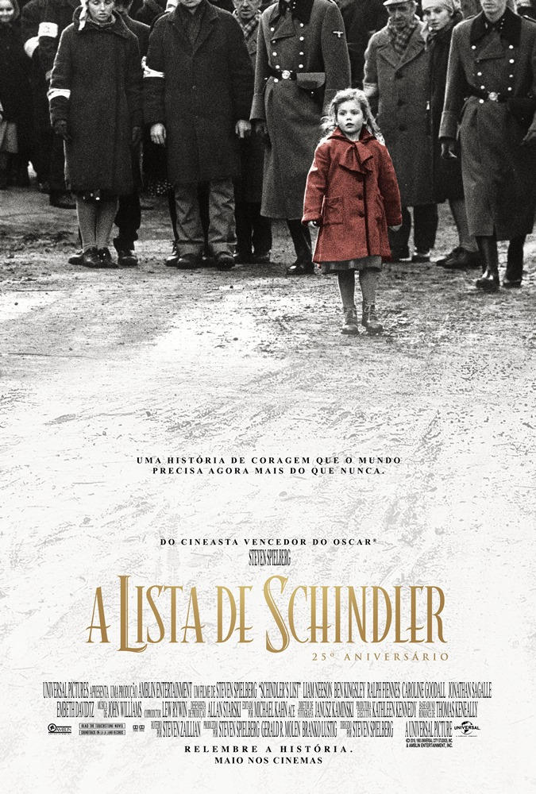
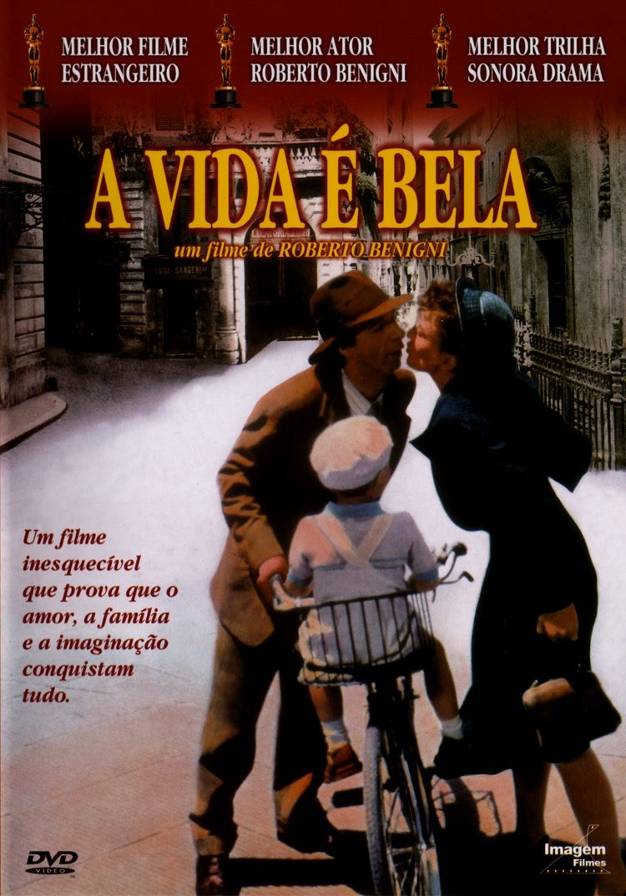

Numa cidade futurística dividida entre os trabalhadores e os planejadores, o filho do maior planejador se apaixona por uma trabalhadora.

Depois de testemunhar a perseguição dos judaicos na Polônia ocupada pelos alemães durante a Segunda Guerra Mundial, o industrial Oskar Schindler se começa a preocupar com sua força de trabalho judaica.
Depois de chegar a Normandía, um grupo de soldados precisam encontrar ao unico irmão vivo de tres que morreram na guerra.

Quando um bibliotecário judeu e seu filho se tornarem vítimas do Holocausto, ele usará uma mistura perfeita de vontade, humor e imaginação para proteger seu filho dos perigos do campo de concentração.